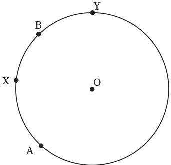
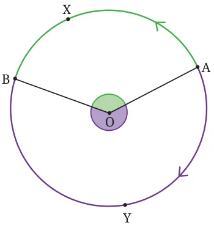
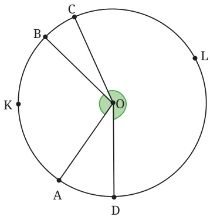
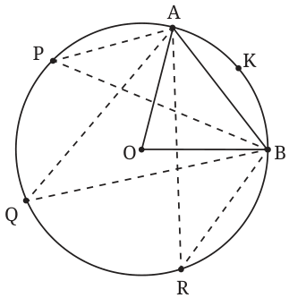
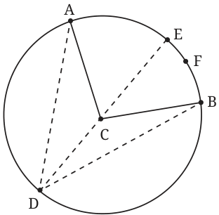
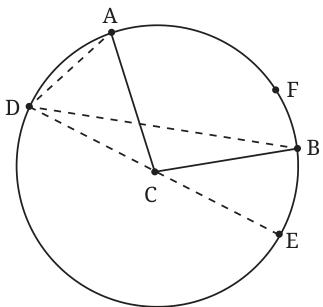
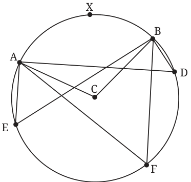
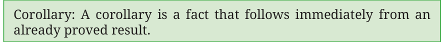

An arc of a circle is a connected portion of the circle. It is defined by two points on the circle, called the end points of the arc, and the curve connecting them along the circle’s edge.

Look at Fig. 5.17. A and B are two points on the circle. There are two ways of going from A to B. One goes via point X and one goes via point Y. The bigger of the two is called the major arc, and the smaller of the two is called the minor arc.
We define the angle subtended by the arc AB at the centre to be the measure of the angle AOB, as we sweep along the arc — so we move from OA to OB along the arc and measure the angle swept. The minor arc subtends the \(\angle AOB\) — here you move from OA to OB via X. The major arc subtends the angle we get as we move from OA to OB via Y (see Fig. 5.18).

Exercise: A circle with centre O is drawn, and A, B, C, D are points on the circle (see Fig. 5.19). Measure the angles subtended by arc AKB and arc CLD at the centre O. If the angle at the centre is less than \(180^{\circ}\), it is a minor arc. If the angle at the centre is greater than \(180^{\circ}\), it is a major arc. State whether arcs AKB and CLD are minor arcs or major arcs.

5.7.1 Angle subtended by an arc at a point on the circle outside the arc
By ʻangle subtended by arc AXB at a point on the circle outside the arcʼ we mean the angle ACB where C is any point on the circle but not on arc AXB. Remarkably, the measure of this angle does not depend upon which specific point C we pick, so long as it is on the circle and outside the arc!
Activity: Draw a circle and a chord AB. Fix an arc AKB formed by AB and a point K between A, B on the circle. Measure the angle subtended at the centre by arc AKB. Take three points P, Q, R on the circle outside arc AKB. Measure the angles subtended by arc AKB at points P, Q, R. What do you notice?
Repeat this activity for a different arc AKB. Based on this activity, we can make a statement about the angles subtended by an arc of a circle at the centre and at a point of the circle outside the arc. We shall show that the following is true.

Theorem 9: The angle subtended by an arc at the centre of the circle is double the angle subtended by the arc at any point on the circle outside the arc.

Given: AFB is an arc. \(\angle ACB\) is the angle subtended by arc AFB at centre C. D is a point on the circle outside arc AFB (see Fig. 5.21).
We will assume for now that D is such that DC when extended cuts the circle at some point E on arc AFB, as shown.
We will consider the other case later.
To show: \(\angle BCA = 2 \angle BDA\).
Why is this true? Join D to C and extend DC to cut the circle at a point E on arc AFB. Now \(\triangle DCB\) is isosceles with \(CB = CD\). So, \(\angle CBD = \angle CDB\).
\(\angle BCE\) is the exterior angle of \(\triangle BCD\). By the exterior angle theorem,
\[\angle BCE = \angle CBD + \angle CDB = 2 \angle BDC.\]Similarly, \(\triangle ADC\) is an isosceles triangle with \(CA = CD\).
So, \(\angle CAD = \angle CDA\)
\(\angle ACE\) is the exterior angle of \(\triangle ADC\). By the exterior angle theorem,
\[\angle ACE = \angle CAD + \angle CDA = 2 \angle CDA.\]Now \(\angle BCA = \angle BCE + \angle ECA\), and \(\angle BDA = \angle BDE + \angle EDA\).
Hence \(\angle BCA = 2 (\angle BDC + \angle CDA) = 2 \angle BDA\).
So, \(\angle BCA = 2 \angle BDA\).
The explanation we have given does not work if the situation is as shown in Fig. 5.22, where the extension of DC meets the circle at a point E outside the arc AFB. We must rework the explanation for this case.

Given: AFB is an arc. \(\angle ACB\) is the angle subtended by arc AFB at centre C. D is a point on the circle outside arc AFB such that when we extend DC it cuts the circle at some point E outside the arc AFB, as shown (Fig. 5.22).
We shall again make use of the properties of isosceles triangles.
\(\angle ACE = \angle ADC + \angle CAD = 2 \angle ADC\), since \(CA = CD\) (and so \(\angle ADC = \angle CAD\)).
Similarly, \(\angle BCE = \angle BDC + \angle CBD = 2 \angle BDC\).
Also, \(\angle ACB = \angle ACE - \angle BCE\), and \(\angle ADB = \angle ADC - \angle BDC\).
Hence \(\angle ACB = 2 \angle ADB\).

Something very interesting comes out of this. This is what the activity before Theorem 9 suggested. Take an arc AB. Decide how you want to go from A to B along the arc. Take any point D on the circle, outside arc AB.
Then, no matter where D is, so long as it is outside the arc and on the circle, \(\angle ADB\) is the same!
Let us understand this better using Fig. 5.23. Consider the arc of the circle going from A to B via X. The points on the circle outside this arc are points you cross as you go from A to B via E. The angle subtended by AXB at the centre is the angle swept by CA as we move from CA to CB via X. Points E, F and D are all not on AXB. The theorem tells us that \(\angle AEB = \angle ADB = \angle AFB = \frac{1}{2} \angle ACB\).
Corollary: The angle subtended by a diameter at any point on the circle is \(90^{\circ}\).


Why is this true? Let AB be a diameter (Fig. 5.24). We must show that \(\angle ADB\) is \(90^{\circ}\). The arc from A to B we take is the arc not containing D. What is the angle subtended by that arc at C? We have to move from A along that arc till we reach B. So, the angle subtended is \(\angle ACB\), a straight angle, \(180^{\circ}\). Hence, \(\angle ADB = \frac{1}{2} \angle ACB = 90^{\circ}\).

This fact that the angles in the same arc segment are all equal is a beautiful fact that distinguishes the circle from all other shapes.
In Fig. 5.25, the angles that arc AB subtends at the points F, G outside the circle are different. For the points inside the circle, \(\angle AIB\), \(\angle ACB\) and \(\angle AHB\) are all different. But for all points P on arc AB, the subtended angles are the same. Thus, for points D, E, \(\angle ADB = \angle AEB\).